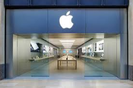

THE ITUNES AND THE APPLE STORE

The i Tunes Store is an online store to sell digital music, music video and movies run by Apple Inc. It was launched April 28, 2003 and is one of the most popular e-commerce sites in the world.
The iTunes Store is the first online music store to collect success, which has produced considerable attention from the media and record companies. Being an online store, is able to provide services that traditional music stores can not provide.
E-commerce is the name used for the process of buying or selling products or services via the Internet. It has radically changed the way people do business.
E-commerce is divided into four main areas:
B2C is the direct sale from the producer to the final consumer, It is very useful because most customers can buy products directly from their homes and can also compare the different prices when they want, because online store are open 24 hours on 24.
B2B is the sale between companies; it has revolutionized the techniques of supply companies, because now they can stay in close contact with suppliers and can order goods in a short time, they can compare prices and costs are greatly reduced.
C2C is the sale between consumer. The C2C is represented by virtual auction sites. Here consumers can find products at a lower price, and may sell their products.
The development of e-commerce has created the virtual marketplace. They are virtual places where customers and suppliers link their demand and their supply.
This is the use of the Internet to advertise goods and services.
Products and services are advertised in different ways:
- Pay per click advertising - where the advertisers pay a fee each time somebody clicks onto their advert
- Banner ads - which run across the top of Internet sites
- e-mail marketing - where advertisers can contact customers directly
Online marketing is linked to m-marketing.
The m-marketing is a way for advertisers to reach the billions of cell phones and mobile computing devices which have become fundamental to modern living.
M-marketing started in 2000s, businesses started to collect mobile phone numbers and send advertising material via short text messages (SMS).
Apple has just developed an application for its phones to increase m-marketing. It is an application that facilitates the placement of banner ads within the applications downloaded from iTunes, so advertising banners are shown while the user is running an application on his iPhone.